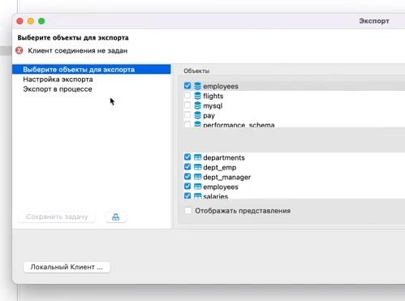

В графическом интерфейсе DBeaver есть небольшая проблема при создании резервных копий через контекстное меню:
<Имя таблицы> - Инструменты - Резервная копия
При открытии окна создания резервной копии в левой верхней части окна будет видна ошибка:
Клиент соединения не задан

В документации будет написано, что необходимо нажать в этом же окне кнопку Локальный клиент, и выбрать локального клиента. В случае PostgreSQL имеется в виду программа pg_dump.
Но проблема в том, что в открывшемся интерфейсе выбора файла невозможно выбрать бинарник клиента. И вообще невозможно выбрать ни один файл, хоть исполняемый хоть нет. Никаких настроек фильтрации или еще чего-то, что показывало бы почему невозможно выбрать файл, в этом интерфейсе нет. В чем проблема?
Оказывается, создатели DBeaver - большие оригиналы. Для каждого типа баз данных DBeaver самостоятельно знает, как называется бинарник клиента создания резервных копий. Только по-умоланию DBeaver не знает, из какого каталога надо брать этот бинарник. И интерфейс выбра локального клиента - это на самом деле интерфейс выбора каталога, где лежит локальный клиент.
Поэтому, если в системе (например, в Debian Linux) клиент создания резервных копий лежит по пути /usr/bin/pg_dump, то в качестве локального клиента надо выбрать каталог /usr/bin. Вот такая странность.
Возможно, эта проблема связана с тем, что DBeaver - это кроссплатформенный инструментарий, и на других платформах (Windows или MacOS) клиент резервного копирования не может лежать по системным путям, поэтому путь к нему надо указывать отдельно.